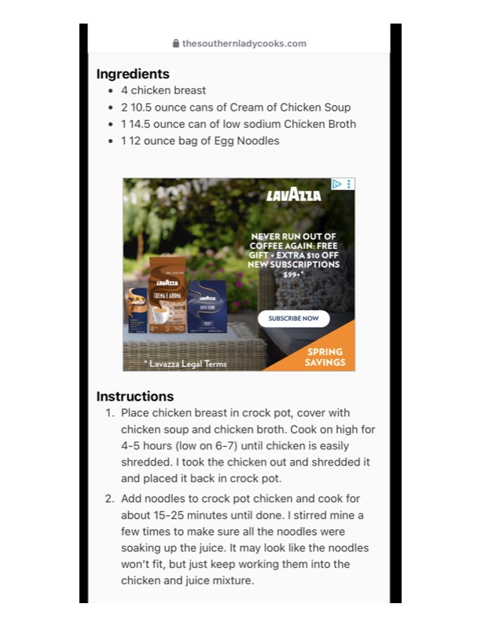

@ thesouthernladycooks.com

Original cookbook page 803
Ingredients
- e Achicken breast
- 210.5 ounce cans of Cream of Chicken Soup
- 114.5 ounce can of low sodium Chicken Brot
- 112 ounce bag of Egg Noodles
- PANEL
- NEVER RUN OUT OF
- COFFEE AGAIN: FREE
- GIFT,+ EXTRA $10 OFF
- NEW SUBSCRIPTIONS
- SUBSCRIBE NOW
- SPRING
- ee Eee Bt RY NAL [ck
Instructions
- Place chicken breast in crock pot, cover with chicken soup and chicken broth. Cook on hig 4-5 hours (low on 6-7) until chicken is easily shredded. I took the chicken out and shreddé and placed it back in crock pot.
- Add noodles to crock pot chicken and cook f about 15-25 minutes until done. I stirred mins few times to make sure all the noodles were won't fit, but just keep working them into the chicken and juice mixture.
Recipe #803 from collection